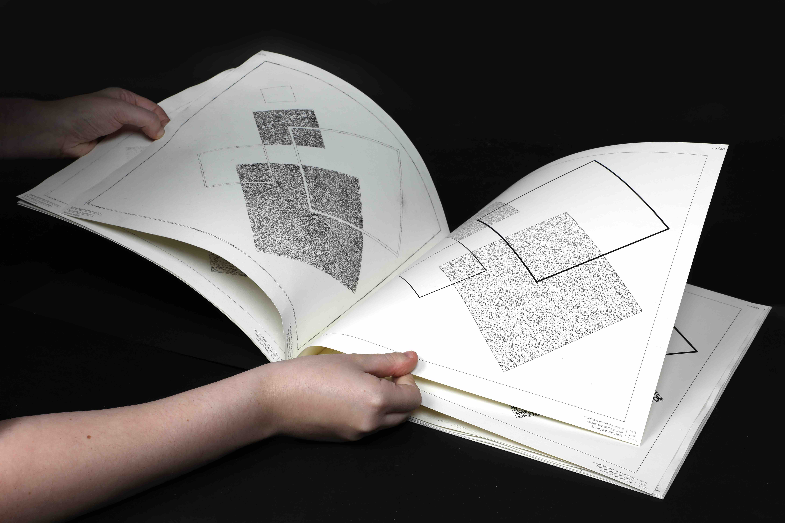
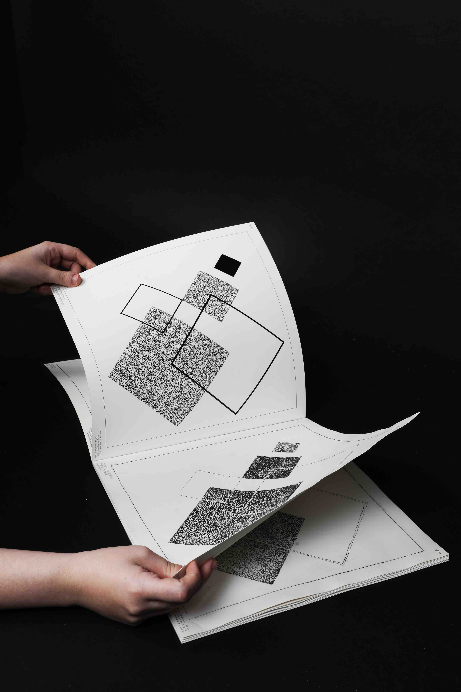
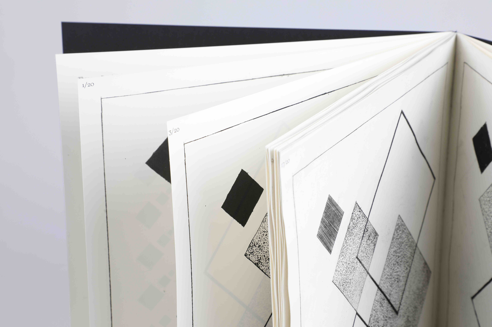
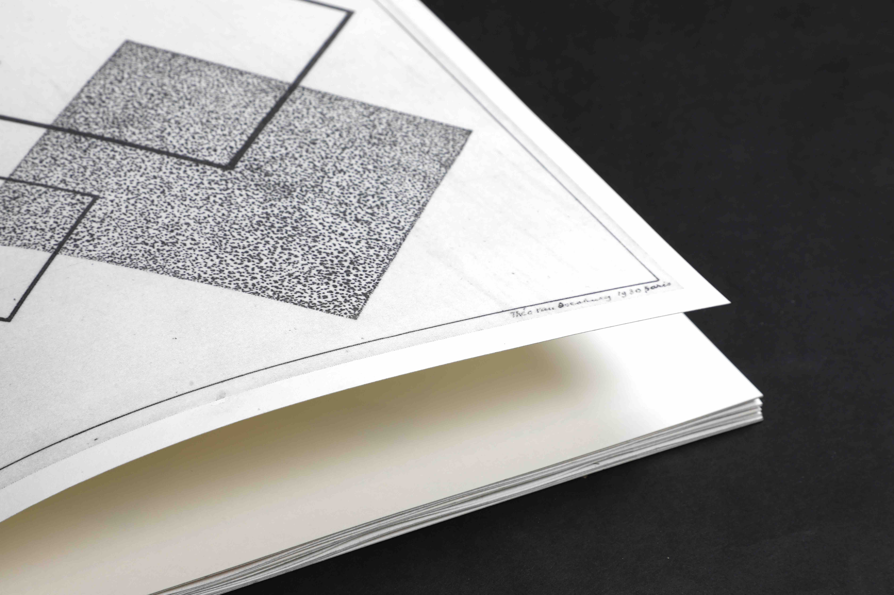
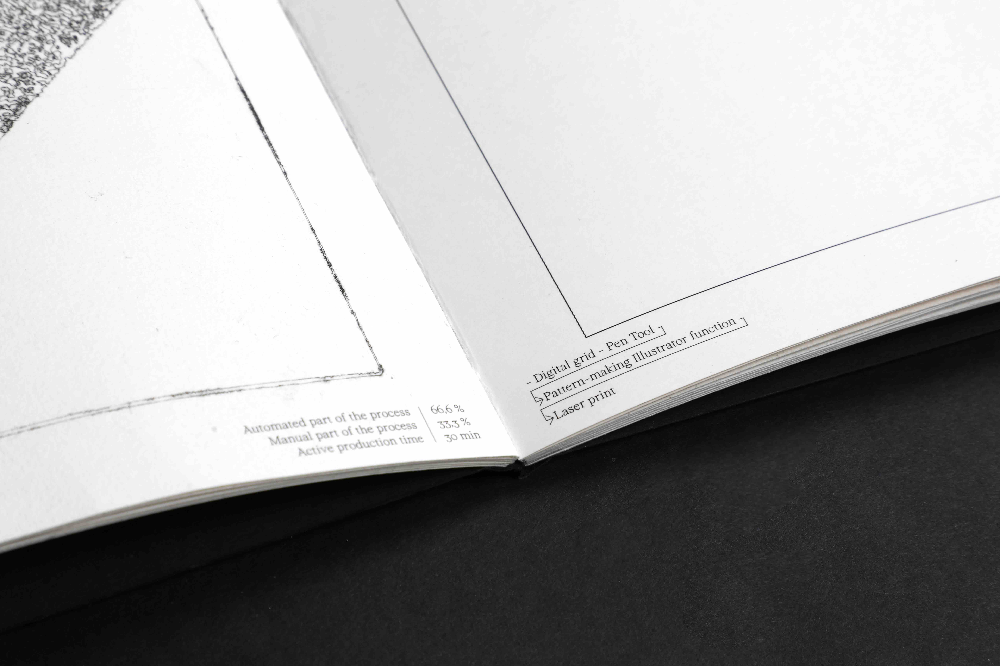
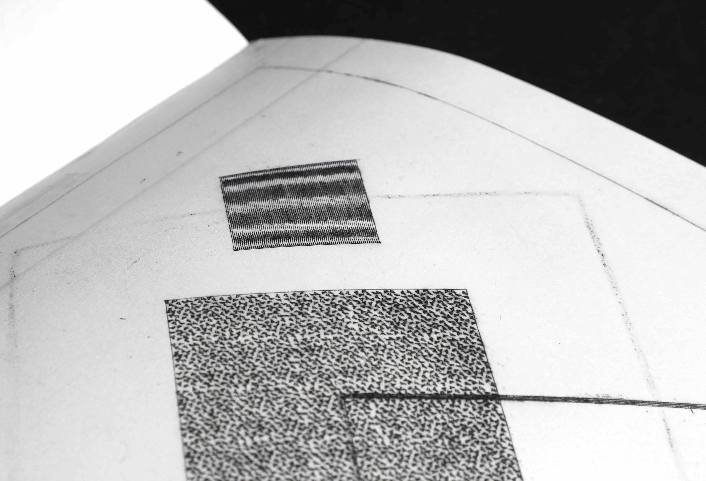
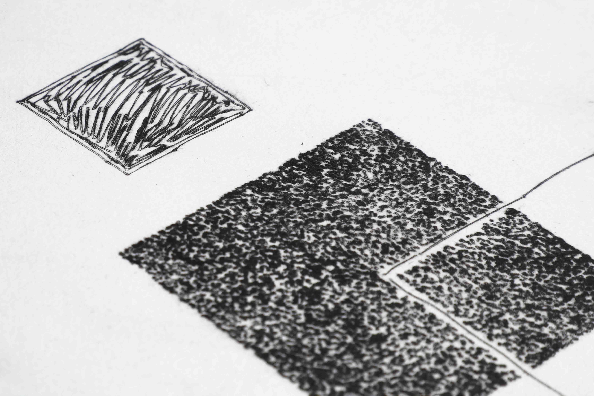
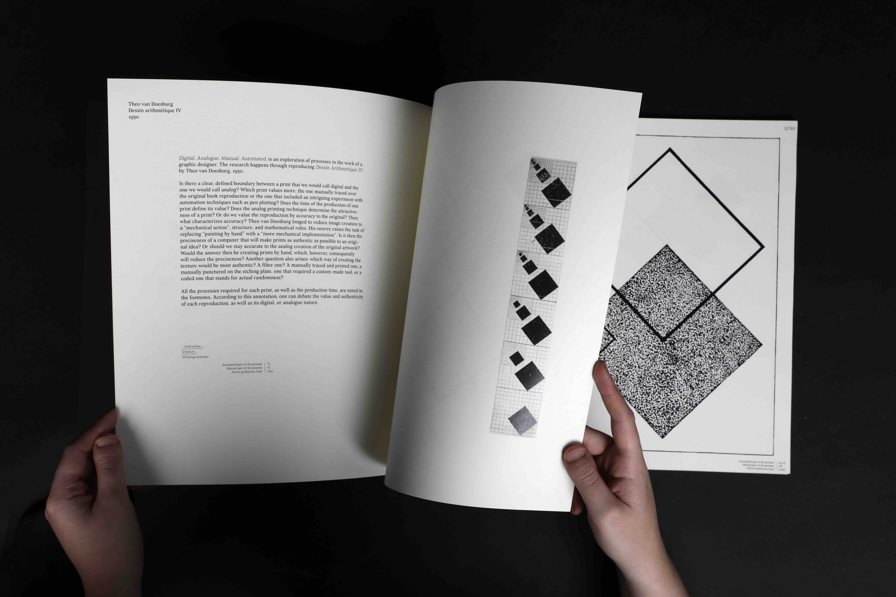
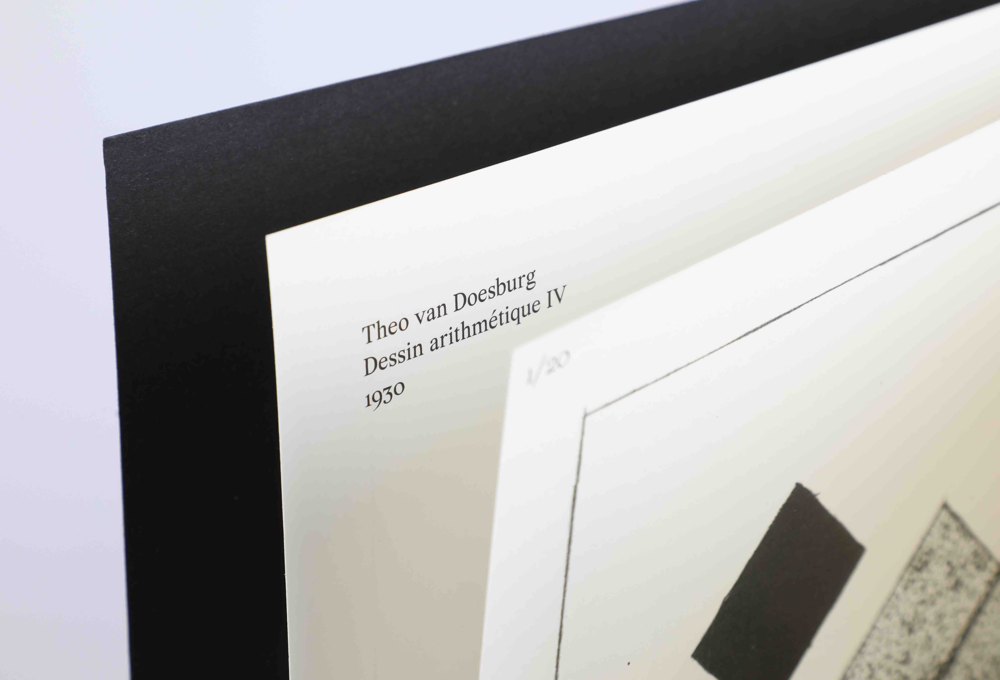
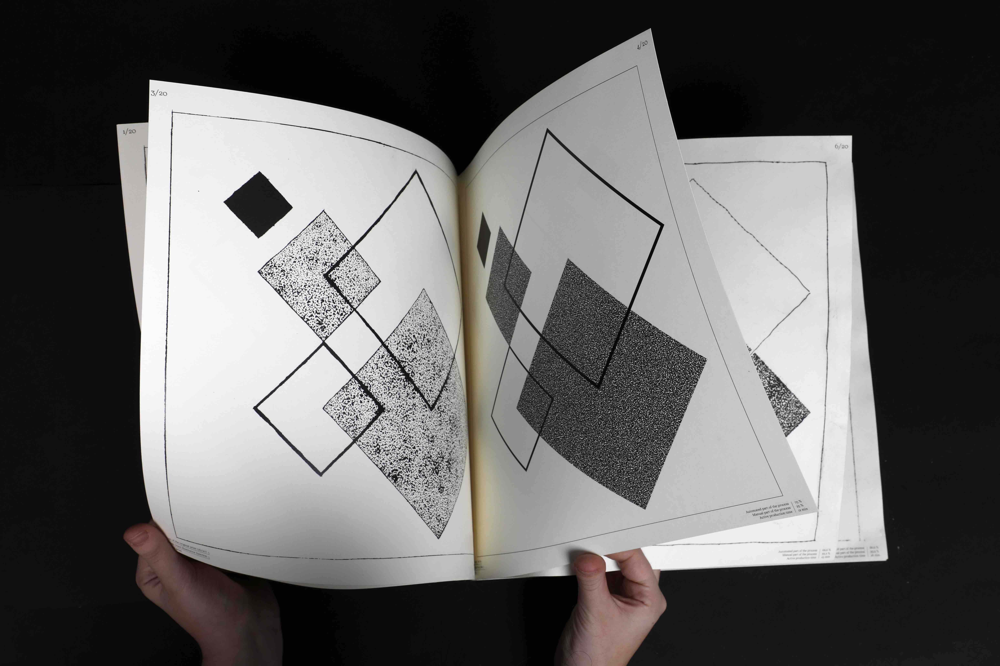

Publication
December 2023


Is there a clear, defined boundary between a print that we would call digital and the one we would call analog? Which print values more: the one manually traced over the original book reproduction or the one that included an intriguing experiment with automation techniques such as pen plotting? Does the time of the production of one print define its value? Does the analog printing technique determine the attractiveness of a print? Or do we value the reproduction by accuracy to the original? Then what characterizes accuracy? Theo van Doesburg longed to reduce image creation to a “mechanical action”, structure, and mathematical rules. His oeuvre raises the task of replacing “painting by hand” with a “more mechanical implementation”. Is it then the preciseness of a computer that will make prints as authentic as possible to an original idea? Or should we stay accurate to the analog creation of the original artwork? Would the answer then be creating prints by hand, which, however, consequently will reduce the preciseness? Another question also arises: which way of creating the texture would be most authentic? A filter one? A manually traced and printed one, a manually punctured on the etching plate, one that required a custom-made tool, or a coded one that stands for actual randomness?
The book includes 20 prints that explore all the questions above. All the processes required for each print, as well as the production time, are noted in the footnotes. According to this annotation, one can debate the value and authenticity of each reproduction, as well as its digital, or analogue nature.




Pen-plotting with a scriber
Manual carving
Laser printing
Drypoint etching
Typeface: Wremena
Guided by Monika Gruzite
ArtEZ
2023

Digital. Analogue. Manual. Automated. is an exploration of a possible scale between the concepts of 'digital' and 'analogue' in graphic design. The research happens through reproducing Dessin Arithmétique IV by Theo van Doesburg, 1930.


